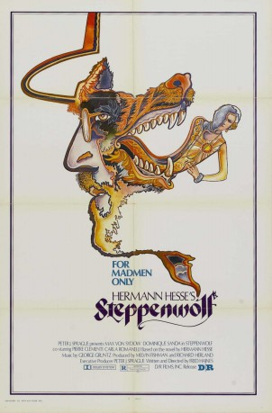

#9534 Der Steppenwolf
 
 IMDB-Wertung: 6.3 / 10
IMDB-Wertung: 6.3 / 10  Metascore: 0
Metascore: 0 
Harry Haller leidet an seiner inneren Zerrissenheit. Er sieht sich selbst als Mischwesen zwischen Mensch und dem metaphorischen „Steppenwolf“, der sich nicht dem Bürgertum anpassen will und gleichzeitig eine Beziehung zur klassischen Literatur und Musik pflegt. Um sein seelisches Leiden zu beenden, beschließt Haller, sich an seinem 50. Geburtstag das Leben zu nehmen.
Jahr: 1974
Dauer: 107 Minuten
FSK:
Land: Schweiz Studio: ArthausTonspuren:
Untertitel: Deutsch,
Auflösung: 1080p (1440x1080) Größe: 8949 MB
Genre: Drama
Regisseur: Fred Haines
Drehbuch: Hermann Hesse, Fred Haines
Soundtrack: George Gruntz
Darsteller:
 Max von Sydow als Harry Haller
Max von Sydow als Harry Haller- Dominique Sanda als Hermine
- Pierre Clémenti als Pablo
- Helmut Förnbacher als Franz
 Sunnyi Melles als Rosa
Sunnyi Melles als Rosa- Carla Romanelli als Maria
- Roy Bosier als Aztec
- Alfred Baillou als Goethe
- Niels-Peter Rudolph als Gustav
- Charles Regnier als Loering
- Eduard Linkers als Mr. Hefte
- Silvia Reize als Dora
- Helen Hesse als Frau Hefte
Datei: X:\1974\Steppenwolf, Der (1974, FSK, 1440x1080).mkv seit 06.09.2018
Festplatte: HD 1971-1979
 Es gibt insgesamt 33 Filme in der Gruppe '1974'
Es gibt insgesamt 33 Filme in der Gruppe '1974'